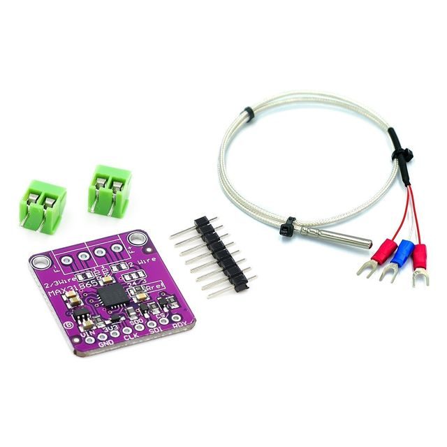
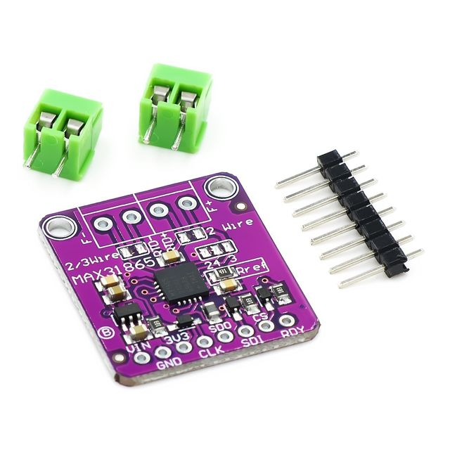
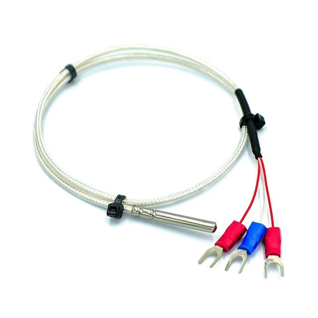

Description
For precision temperature sensing, nothing beats a Platinum RTD. Resistance temperature detectors (RTDs) are temperature sensors that contain a resistor that changes resistance value as its temperature changes, basically a kind of thermistor. In this sensor, the resistor is actually a small strip of Platinum with a resistance of 100 ohms at 0°C, thus the name PT100. Compared to most NTC/PTC thermistors, the PT type of RTD is much most stable and precise (but also more expensive) PT100's have been used for many years to measure temperature in laboratory and industrial processes, and have developed a reputation for accuracy (better than thermocouples), repeatability, and stability.
However, to get that precision and accuracy out of your PT100 RTD you must use an amplifier that is designed to read the low resistance. Better yet, have an amplifier that can automatically adjust and compensate for the resistance of the connecting wires. If you're looking for a great RTD sensor, today is your lucky day because we have a lovely Ours RTD Sensor Amplifier with the MAX31865 breakout for use with any 2, 3 or 4 wire PT100 RTD!
We've carried various MAXIM thermocouple amplifiers and they're great - but thermocouples don't have the best accuracy or precision, for when the readings must be as good as can be. The MAX31865 handles all of your RTD needs, and can even compensate 3 or 4 wire RTDs for better accuracy. Connect to it with any microcontroller over SPI and read out the resistance ratio from the internal ADC. We put a 430Ω 0.1% resistor as a reference resistor on the breakout. We have some example code that will calculate the temperature based on the resistance for you.
We even made the breakout 5V compliant, with a 3.3V regulator and level shifting, so you can use it with any for For Ard uino or microcontroller.
Each order comes with one assembled RTD amplifier breakout board. Also comes with two 2-pin terminal blocks (for connecting to the RTD sensor) and pin header (to plug into any breadboard or perfboard). A required PT100 RTD is not included! (But we stock them in the shop). Some soldering is required to solder the headers and terminal blocks to the breakout, but it's an easy task with soldering tools.
Features and benefits
1. Support 100Ω to 1kΩ (0°C) platinum resistance RTD (PT100 to PT1000); (The Module resistor uses 430R)
2. Compatible with 2-wire, 3-wire and 4-wire sensor connections;
3. SPI compatible interface;
4.15-bit ADC resolution with a nominal temperature resolution of 0.03125 °C (variable with RTD nonlinearity);
5. The total accuracy is maintained at 0.5 ° C (0.05% of full scale) under the entire working conditions;
6 fully differential VREF input;
7. Conversion time: 21ms (maximum);
8. Integrated fault detection to increase system stability: (RTD open circuit, RTD short circuit to voltage outside the range or short circuit of RTD components).


